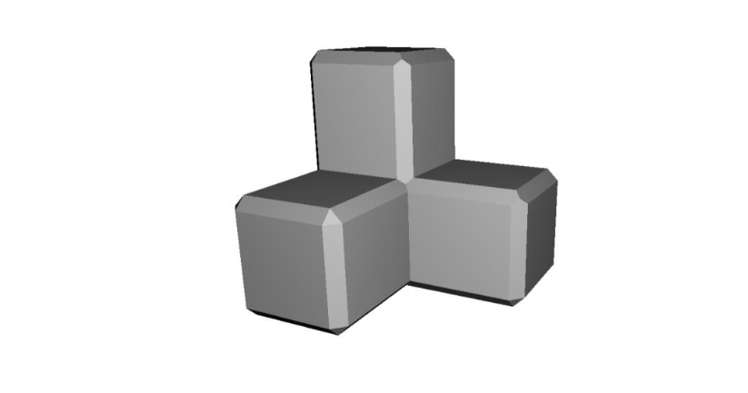

Manufacturing Projects
AI in Manufacturing
Industry 4.0 analysis on how AI drives quality, predictive maintenance, and production efficiency.

Project Details
Synthesized research on AI-enabled inspection, forecasting, and scheduling to quantify impacts on cost, throughput, and sustainability. Discussed integration challenges and workforce implications to guide adoption strategies for advanced manufacturing.
Six Sigma Process Improvement (Additive Mfg.)
DMAIC-based evaluation of a 3D printing process to reduce variability and improve repeatability.
Project Details
Collected dimensional data; built X̄–R control charts; performed ANOVA/DOE and nested Gage R&R. Confirmed overall process stability; identified measurement repeatability as primary source of residual error; proposed calibration and sampling improvements for tighter tolerances in additive manufacturing.
Manufacturing Systems Optimization Study
Integrated line balancing, MRP/BOM, and reliability modeling into one applied manufacturing study.
Project Details
- Assembly Line Balancing: Achieved simulated 92.5% line efficiency; minimized idle time via precedence sequencing and workstation allocation.
- MRP & BOM: Built product structure trees and dependent-demand schedules to plan materials and lot-sizing for scalable production.
- Reliability Engineering: Modeled series/parallel configurations; recommended redundancy to raise system reliability while managing cost.
- Process Strategy & Layout: Evaluated product vs. process layouts, capacity, and flow to support lean operations.